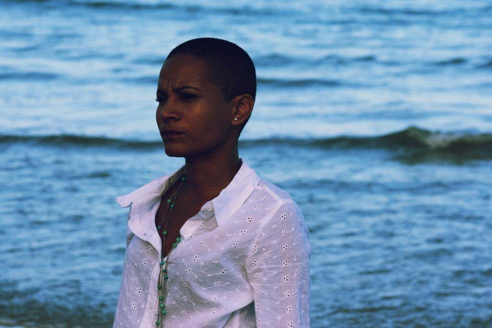
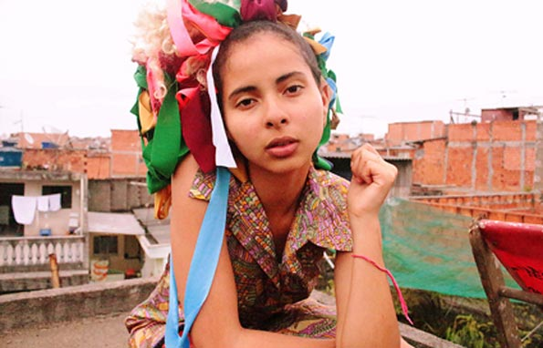

Funções / Atuação
As informações de cada perfil são de responsabilidade das profissionais.
Você quer conhecer profissionais de quais estados?
Marcar/Desmarcar todos
CARREGANDO ...
 Brenda Ligia Miguel (PE)
Brenda Ligia Miguel (PE)
Brenda Ligia Miguel
Recife (PE)
brenda.ligia@hotmail.com
Brenda Ligia, atriz de cinema, está em "Todas as Cores da Noite" (Pedro Severien), "As Melhores Coisas do Mundo" (Laís Bodanzky), "Sangue Azul" (Lírio Ferreira), "Bruna Surfistinha" (Marcus Baldini), e outros. Atuou nas séries de televisão "A Mulher do Prefeito" (Rede Globo), "Beleza S/A" (GNT), "9mm SP" (Fox), "Somos Um Só" (TV Cultura), diversos comerciais e videoclipes musicais. Também é apresentadora e cineasta. Estudou no Teatro Escola Macunaíma/SP; atuou em comédias, musicais, infantis e dramas. É formada em Comunicação Social pela Faculdade Oswaldo Cruz/SP, cursou Ciências Sociais na University of the West Indies (Trinidad & Tobago) e Francês em Vevey (Suíça).
http://brendaligia.blogspot.com.br
Outras atividades de Brenda Ligia Miguel
Direção |
Dublagem |
Edição |
Roteiro
Amostra de vídeo
Cíntia Lima (PE)
Cíntia Lima
32 anos | Recife (PE)
cintiaznlima@gmail.com
Graduanda em Artes Visuais pela UFPE, iniciou a sua carreira como artista visual em 2012, como codiretora e performer da videoarte Maldita Poesia. Desde então, tem se dedicado principalmente à criação de performances que mesclam diferentes linguagens e técnicas artísticas, especialmente as visuais. Com isso, suas obras comumente estão presentes tanto em exposições de arte como em mostras e festivais de cinema. Em 2014, junto a outras artistas, fundou o coletivo DALE (Diretório Artístico de Liberdade Estética). Junto ao coletivo foi codiretora, performer do curta “Rito”. Também em 2014, desenvolveu ""Teorema da Permanência"", uma serie de performances sobre memória e gênero apresentada também em 2015, em Recife. Concilia seus trabalhos no campo das artes visuais com a carreira de atriz.
https://cintiazlima.wordpress.com/
Outras atividades de Cíntia Lima
Direção |
Direção de arte |
Produção
Amostra de vídeo | Senha: dalerito
 Cláudia Barbot (RJ)
Cláudia Barbot (RJ)
Cláudia Barbot
Rio de Janeiro (RJ)
claubarbot@yahoo.com.br
Cláudia Barbot teve sua formação através de oficinas com diversos grandes nomes do teatro gaúcho, além de Workshops com profissionais nacionais e internacionais. Fez parte de diversos curtas metragens, entre eles "Cadernos da Guerra", de Alan Mendonça e "Tudo que resta", de Davi de Oliveira Pinheiro. Filmou no início de 2016 seu primeiro longa-metragem, "Contos do Amanhã", que está em fase de finalização. Além disso fez uma participação na mini-série "O Tempo e o Vento", que foi exibida nos primeiros dias do ano de 2014. Seu último espetáculo teatral foi "Áurea, a lei da velha senhora", da Cia Banquete Cultural. É também integrante da Cia Vocal Cênica EmBandoCanto desde 2014.
http://www.facebook.com/claubarbot | http://youtube.com/claubarbot
Outras atividades de Cláudia Barbot
Dublagem |
Locução |
Produção
Amostra de vídeo
 Cristina Nogueira (RJ)
Cristina Nogueira (RJ)
Cristina Nogueira
36 anos | Rio de Janeiro (RJ)
primeiropulo@gmail.com
Atriz formada pela escola de teatro Martins Penna.
http://crisnogue.wixsite.com/crisnogue
Outras atividades de Cristina Nogueira
Locução |
Produção
Amostra de vídeo
 Dandara de Morais (PE)
Dandara de Morais (PE)
Dandara de Morais
26 anos | Recife (PE)
dandarademorais@gmail.com
Atriz premiada pela sua performance em Ventos de Agosto (2014) - Gabriel Mascaro. Atualmente prepara-se para protagonizar uma série de TV e mais um longa metragem. Seu último longa, Açúcar, está em finalização e será lançado em breve.
http://dandarademorais.tumblr.com/
Amostra de vídeo
 Danddara (RJ)
Danddara (RJ)
Danddara
47 anos | Rio de Janeiro (RJ)
dandarah@rocketmail.com
DANDDARA nasce em 1968; cresce na cena cultural do Samba carioca. É cineasta, performer, escritora e artista florestal premiada no Brasil e nos EUA. Sua arte ambientalista explora as Florestas Brasileiras em várias mídias. Em 1985, estreia no palco em musical de Bia Lessa. Em 1988, estreia no livro em antologias da Oficina Literária Ivan Proença; no mesmo ano funda o TEATRO FLORESTAL DO RIO DE JANEIRO. Na RIO-92, seu show Amor à Natureza com Henrique Cazes apresenta repertório de EcoSambas em evento cultural oficial. Muda pra Nova York em 1993. Em 2000 com Gurufim na Mangueira, estreia no cinema e se torna a primeira mulher negra cineasta do Brasil.
https://branded.me/danddara
Outras atividades de Danddara
Direção |
Edição |
Roteiro
Amostra de vídeo
 Dani Reis (RS)
Dani Reis (RS)
Dani Reis
29 anos | Viamão (RS)
dani.reis.87@gmail.com
Dani Reis é uma atriz gaúcha, nascida em 25 de fevereiro de 1987, natural de São Francisco de Paula na Serra Gaúcha. Atua no teatro desde 2010 e vem desenvolvendo um trabalho interessante no cinema e na publicidade também.
http://facebook.com/danielareisatriz
Outras atividades de Dani Reis
Dublagem |
Locução |
Oficinas e cursos livres |
Pesquisa e desenvolvimento
Amostra de vídeo
 Denizeli Cardoso - DNZL (RS)
Denizeli Cardoso - DNZL (RS)
Denizeli Cardoso - DNZL
51 anos | Porto Alegre (RS)
denizeli_cardoso@yahoo.com.br
Experiência Profissional: Iniciou no teatro com o grupo teatral Face Carretos no espetáculo “Macário o Afortunado” de Camilo de Lélis. Ainda com o grupo participou da abertura do espaço cultural Usina do Gasômetro. Em 1993 estréia o espetáculo Clara Guerreira, para logo em seguida dar rumo também a sua carreira decantora, ingressando em 1994 na banda M16 de Eduardo Borges(Branca). A partir daí procura aprimorar-se como cantora, participando de Corais(Coral da AABB, URFGS e Santa Casa), além de fazer backin vocal para bandas e gravar jingles. Em 1999 volta a trabalhar no teatro com Camilo de Lélis na montagem “Os Crimes da Rua do Arvoredo”.
https://www.facebook.com/denizeli.cardoso
Outras atividades de Denizeli Cardoso - DNZL
Dublagem |
Locução |
Produção
Amostra de vídeo
 Erica Ribeiro (SP)
Erica Ribeiro (SP)
Erica Ribeiro
29 anos | São Paulo (SP)
eraribeiro@gmail.com
Artísta multifuncional.
http://eraribeiro.blogspot.com
Outras atividades de Erica Ribeiro
Cenografia |
Direção de Arte |
Dublagem |
Figurino |
Locução |
Maquiagem |
Oficinas e cursos livres |
Preparação de Elenco
Amostra de vídeo
 Izabel Neiva (SP)
Izabel Neiva (SP)
Izabel Neiva
40 anos | Guarulhos (SP)
izabel_neiva@hotmail.com
Sou Bacharel em Artes Cênicas pela Escola Celia Helena, licenciada em artes com habilitação em teatro pela Faculdade Paulista de Artes, MBA pós graduada em cinema pela Lafilm Institute, técnica em atuação e direção pelo Inst Stanilavisk. Trabalhos: Assist Direção Longa metragem Off Line, Direção/Produção e atuação curta A Utima Chance, Direção e Produção Curta O Menino da moeda (proj em fase de captação). Dezenas de curtas como atriz, no teatro trabalhei com os diretores: Marco Antônio Brás, Claudia Schapira, Bete Dorgam, Simone Boer.
Outras atividades de Izabel Neiva
Assistência de Direção |
Continuidade |
Direção |
Preparação de Elenco |
Produção |
Roteiro
Amostra de vídeo
 Luciana Fernandes (SP)
Luciana Fernandes (SP)
Luciana Fernandes
18 anos | São Paulo (SP)
lufernandescontato@hotmail.com
Atriz, cursando a Escola de Atores Wolf Maya. Romeu e Julieta - A Construção de Americanopolis / Paideia / Antes a Violência / (Cia Faz de conta) / Direção - Geano Tespi; De Dionísio para Koré / O Santo Dialético / (Teatro do Incêndio) / Direção - Marcelo Marcus Fonseca; Janelas de Nelson - Escola de atores Wolf Maya / Direção - Elias Andreato.
 Luciana Gonçalves (SP)
Luciana Gonçalves (SP)
Luciana Gonçalves
36 anos | São Paulo (SP)
lucianagoncalveslg@yahoo.com.br
Estou me graduando em letras, escrevo textos de assuntos diversos. Estou sempre presente em eventos culturais. Feminista, Africanista e independente. Possuo comunicação eficiente oral e escrita.
https://www.linkedin.com/pulse/recursos-humanos-luciana-gon%C3%A7alves?trk=pulse_spock-articles | https://br.linkedin.com/in/lucianagoncalveslg
Outras atividades de Luciana Gonçalves
Crítica |
Dublagem
 Luciana Silveira (SP)
Luciana Silveira (SP)
Luciana Silveira
São Paulo (SP)
lucianasilveira007@gmail.com
Atriz formada pelo INDAC em "Artes Cênicas" em 2001, DRT 18629. Formada pelo SENAC LAPA-SP em Locução Noticiarista de TV. Conheça minha trajetória artística em meu site.
http://www.lucianasilveira.com.br
Outras atividades de Luciana Silveira
Dublagem |
Locução
Amostra de vídeo
Luneta Vermelha (SP)
Luneta Vermelha
22 anos | São Paulo (SP)
lunetaavermelha@gmail.com
Artista em dublagem, atuação e trilha sonora com experiência de cinco anos, trabalhando em projetos de coletivos multimídia independentes. Foi responsável pelo conceito e criação da trilha do game "Lost In Dreams" (2015), curta- metragem "O Conto do Amor Seguido" (2014) e atualmente encaminha seus trabalhos de música e artes visuais através do projeto Luneta Vermelha.
http://lunetaavermelha.wixsite.com/lunetavermelha
Outras atividades de Luneta Vermelha
Atuação |
Trilha sonora
Amostra de vídeo
 Mariani Lima (SP)
Mariani Lima (SP)
Mariani Lima
25 anos | Campinas (SP)
mariani_lima@hotmail.com
Formada em Cinema e Audiovisual na UFPel, atualmente trabalho como cinegrafista e editora freelancer em Campinas. Também sou Audiodescritora certificada.
http://www.vimeo.com/mariani
Outras atividades de Mariani Lima
Assistência de Direção |
Direção |
Direção de Fotografia |
Edição |
Fotografia Still |
Oficinas e cursos livres |
Roteiro
Amostra de vídeo
 Marina Kerber (RS/SP)
Marina Kerber (RS/SP)
Marina Kerber
25 anos | Porto Alegre (RS) e São Paulo (SP)
marinatkerber@gmail.com
Mestra em Meios e Processos Audiovisuais na USP. Bacharel em Realização Audiovisual pela UNISINOS. Tem experiência profissional em Cinema, principalmente, como diretora, diretora de arte, figurinista e animadora, tendo experiência em curta-metragens, longa-metragens e videoclipes. Já participou de festivais nacionais e internacionais de cinema, principalmente direcionados às técnicas de animação (Upto3/Canadá, Monstra Festival/Portugal) e ganhou prêmios em festivais como o Festival do Minuto (Recheio de Tinta, Pequena Porção vermelha e Martina) e o 1º Festival Luz de Cinema Latino-americano (Balão Selvagem).
http://be.net/marinakerber
Outras atividades de Marina Kerber
Animação |
Direção |
Direção de Arte |
Figurino |
Fotografia still
Amostra de vídeo
 Nadia Bambirra (RJ)
Nadia Bambirra (RJ)
Nadia Bambirra
51 anos | Rio de Janeiro (RJ)
nadiabambirra@hotmail.com
Diretora, atriz, produtora e treinadora de atores. Atualmente dando aula de interpretacao para camera, na escola Wolf Maya e ensaiando o proximo espetaculo.
http://curtaviver.blogspot.com
Outras atividades de Nadia Bambirra
Direção |
Preparação de elenco |
Produção
Amostra de vídeo
 Naymare Azevedo (RN)
Naymare Azevedo (RN)
Naymare Azevedo
24 anos | Natal (RN)
naymaresazevedo@gmail.com
Naymare Azevedo, produtora executiva, gestora de políticas públicas e marketing cultural. Diretora criativa do Espaço Criativo Aayabá e coordenadora do projeto de formação criativa do AFROTONIZAR.
Outras atividades de Naymare Azevedo
Assistência de Direção |
Captação de Recursos |
Cineclubismo |
Coordenação de Projeto |
Direção |
Oficinas e cursos livres
|
Pesquisa e desenvolvimento |
Produção |
Produção executiva
Amostra de vídeo
 Taty Godoi (SP)
Taty Godoi (SP)
Taty Godoi
41 anos | São Paulo (SP)
tatianabgodoi@gmail.com
Aos 10 anos a atriz Tatiana Godoi começou a fazer Teatro no bairro do Bexiga com o grupo os 16 meninos da treze de maio. Aos 12 anos ingressou no grupo Timol na Biblioteca Monteiro Lobato onde ficou por 4 anos. Se formou no Teatro Macunaima em 1996, tendo feito também parte do grupo Tusp durante quase 2 anos. Em 2005 começou a fazer filmes Publicitários tendo participação em novelas, longas e curtas metragens. Apresentou o programa ao vivo Manhã com Você na Rede NGT.
http://youtube.com/tatianagodoi
Amostra de vídeo
 Thalma de Freitas (EUA)
Thalma de Freitas (EUA)
Thalma de Freitas
42 anos | Los Angeles (EUA)
thalmadefreitas@gmail.com
Thalma de Freitas é atriz, cantora e compositora. Atuou em 15 tele-novelas e no teatro com diretores, Augusto Boal, Jorge Fernando e Michel Melamed. Filha do maestro Laercio de Freitas, crooner na big band carioca Orquestra Imperial, suas músicas já foram gravadas por Gal Costa, Mariana Aydar e Filipe Catto.
http://www.thalmadefreitas.com
Outras atividades de Thalma de Freitas
Dublagem |
Locução |
Produção
Amostra de vídeo
 Ticiane Simões (AL)
Ticiane Simões (AL)
Ticiane Simões
33 anos | Maceió (AL)
ticiane.santana@hotmail.com
Sou atriz em Alagoas, portanto necessito exercer várias outras funções para sobreviver. Sou negra e indígena, embora admita não ter um aprofundamento de minha árvore genealógica. Sou "multifacetaria", inquieta e guerreira. Já fiz, e faço ainda, muitos trabalhos para o teatro e nos últimos anos venho me permitindo descobrir o cinema. Bem, sempre é mais fácil falar de um personagem que de mim...